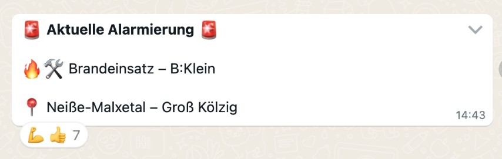
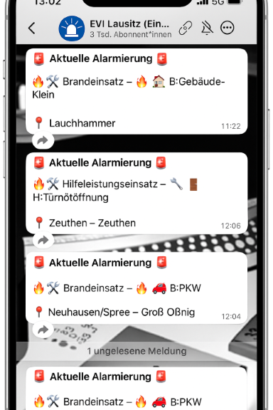

🚒 EVI Lausitz – Feuerwehr-Einsätze live per WhatsApp aus der Leitstelle Cottbus
EVI steht für Einsatz-Vor-Information – direkt aus der Leitstelle Lausitz (Cottbus), in Echtzeit auf dein Handy.
Du bekommst automatisch Feuerwehr-Einsätze aus der Region per WhatsApp – schnell, anonym & kostenlos.
🔗 Kanal abonnieren
📍 Regionale Kanäle für spezifische Landkreise
Wenn du dich für Einsatzinformationen speziell aus deinem Landkreis interessierst, kannst du auch einen der folgenden regionalen Kanäle abonnieren:
- 🟥 Landkreis Elbe-Elster (EE)
- 🟪 Landkreis Oberspreewald Lausitz (OSL)
- 🟩 Landkreis Dahme Spreewald (LDS)
- 🟦 Landkreis Spree-Neiße (SPN)
- 🟨 Kreisfreie Stadt Cottbus
ℹ️ Hintergrund
Viele kennen noch EVI von Twitter. EVI Lausitz setzt diese Idee für die Region fort – diesmal über WhatsApp.

💬 Weitererzählen hilft!
Unser Kanal ist in der WhatsApp-Suche (noch) nicht sichtbar – teile ihn gern mit anderen oder in deinem Status.